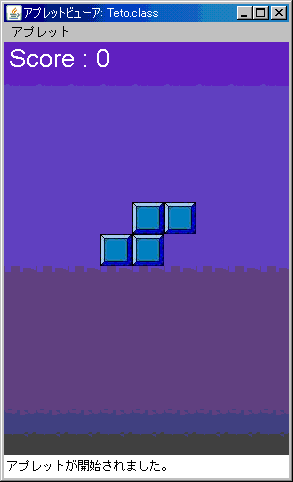
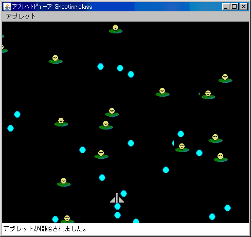
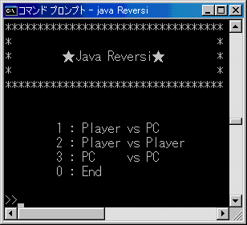
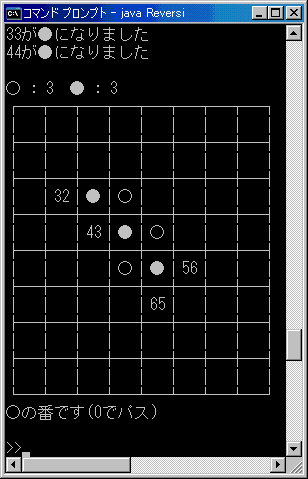
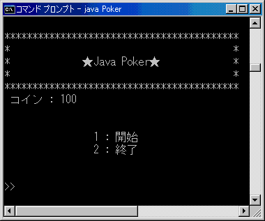
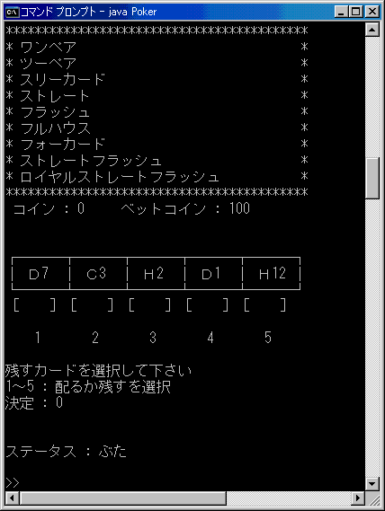

Javaゲーム
Javaで作成したミニゲームのソースコードを掲載しています。
参考になるものがあれば、使ってあげて下さい。
Java Teto

テ○リス風のブロックゲームです。
カーソルキーでブロックを移動し、Zキーでブロックを回転させます。
アプレットで作りましたので、htmlファイルを開いていただくか、 コマンドプロンプトで実行する場合、
[appletviewer index.html]
とコマンドを打ち込んでください。
Java Shooting

簡単なシューティングゲームのサンプルです。
カーソルキーで自機が移動し、Zキーで弾を発射します。
アプレットで作りましたので、htmlファイルを開いていただくか、 コマンドプロンプトで実行する場合、
[appletviewer index.html]
とコマンドを打ち込んでください。
Java Reversi


シンプルなリバーシです。
コマンドプロンプトで実行します。
無駄にコンピュータ対コンピュータ対戦を作ってみました。
実行すると一瞬にして決着がつきます…
Java Poker


シンプルなポーカーです。
コマンドプロンプトで実行します。